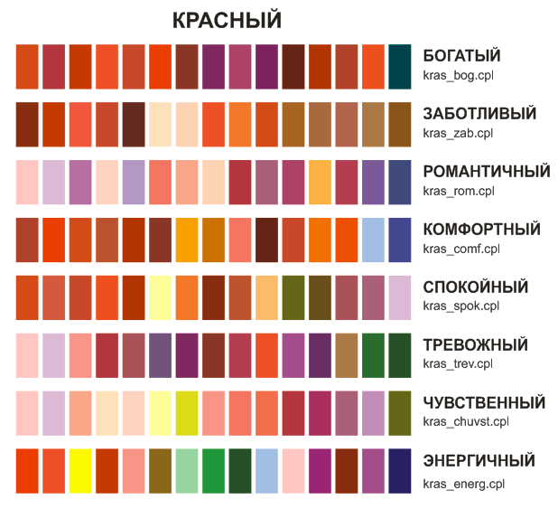

Палитры настроения
Данная тема содержит "палитры настроения" (как я их условно назвал), составленные по книге "Гармония цвета. Природные натуральные цвета. Практический каталог расширенных цветовых гамм с расшифровкой всех оттенков по системе CMYK". Кто исходный автор пособия - я выходных данных так и не нашел. "Это пособие, написанное профессионалом для профессионалов" (из аннотации). Скажем пасибо этому профессионалу
Итак, начнем.
Красный.
"Красный - символ плодородия и зарождения новой жизни, цвет уверенности и силы. Горячий, независимый и порывистый, элегантный и чувственный. По энергетике он стоит вторым после черного цвета. Одновременно этот цвет может олицетворять как энергию и пылкость жизни, так и силу зла, опасность. Он возбуждает, провоцирует, побуждает к действию, а иногда и к агрессии. Двойственная природа этого цвета требует очень тонкого чувства меры при его использовании. Темные теплые оттенки согревают, обволакивают, успокаивают. Тогда как холодные оттенки серо-красного могут символизировать некоторую отстраненность."

В архиве 8 соответствующих палитр.

Zeram, Спасибо! Весьма полезный материал. А для начинающих, у кого чувство гармонии пока не развито - совершенно необходимый. Да и по мылу с заказчиками, куда быстрее вопрос будет решаться, из-за наглядности и психологического восприятия по названиям палитр. Жирный зачёт!
Добрый_ХАМ, посмотри ссылку которую дал Zeram.
http://ru-ru.colourlovers.com/palettes/top - это круто!
Des425, Спасибо. Не знаю, правда, как применить в хозяйстве информацию с сайта. С колористикой у меня проблем не возникало, больше всего порадовало как раз то, как эти наборы сопряжены с эмоциями и настроением. По опыту работы с дамами-заказчицами, вот эти названия будут играть огромную роль. Особенно слова - "роскошь", "романтика", "интрига" - это капец! ;D Правда, иногда надо будет заблаговременно названия менять местами, дабы склонить клиентку в нужную сторону! :D
Да ето сплошная "интрига" выходит :D
Страницы